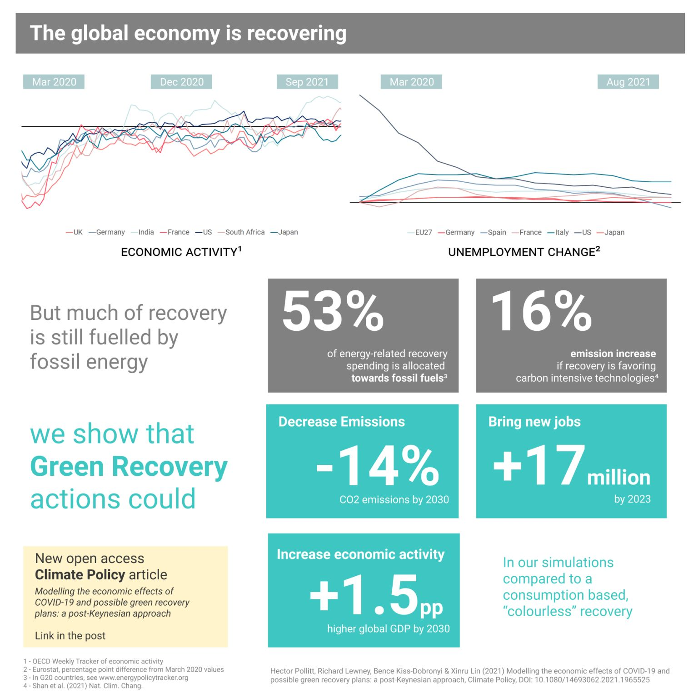
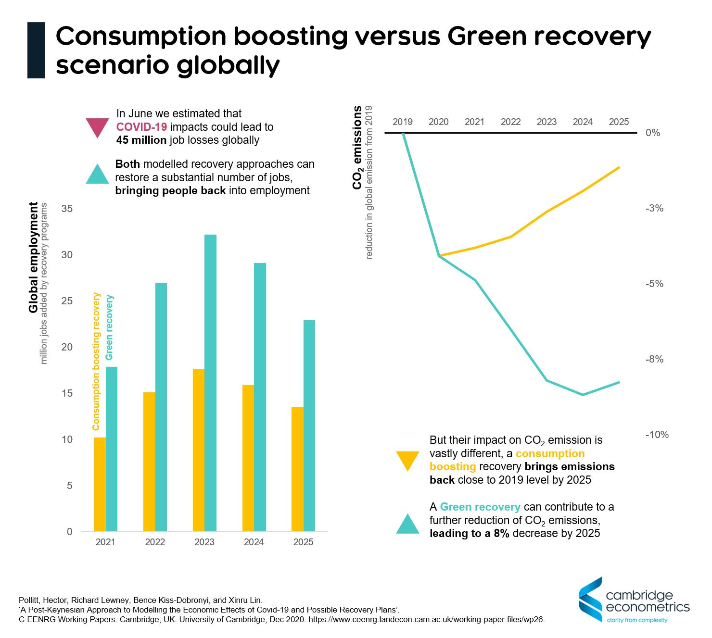
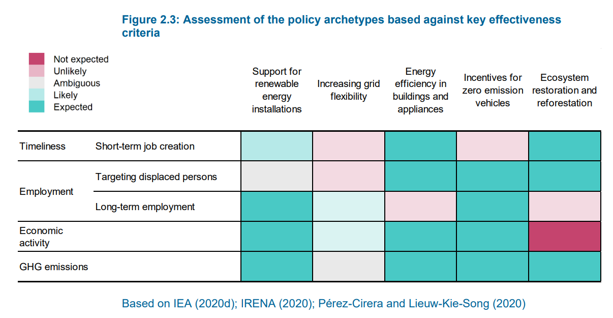
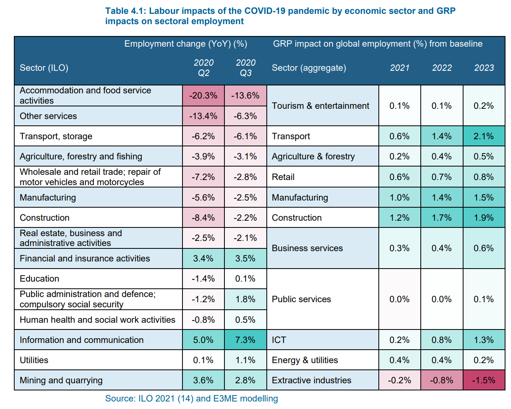
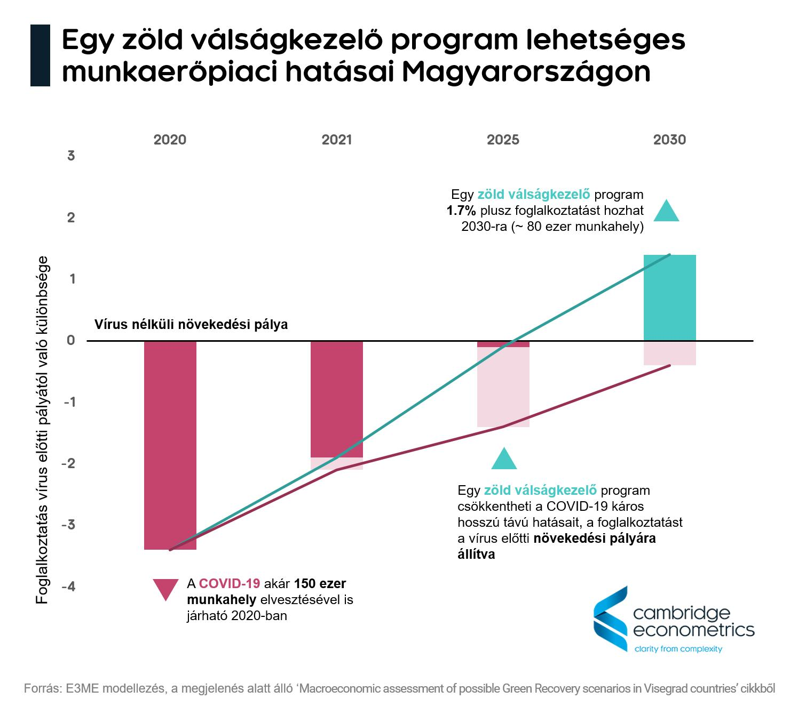
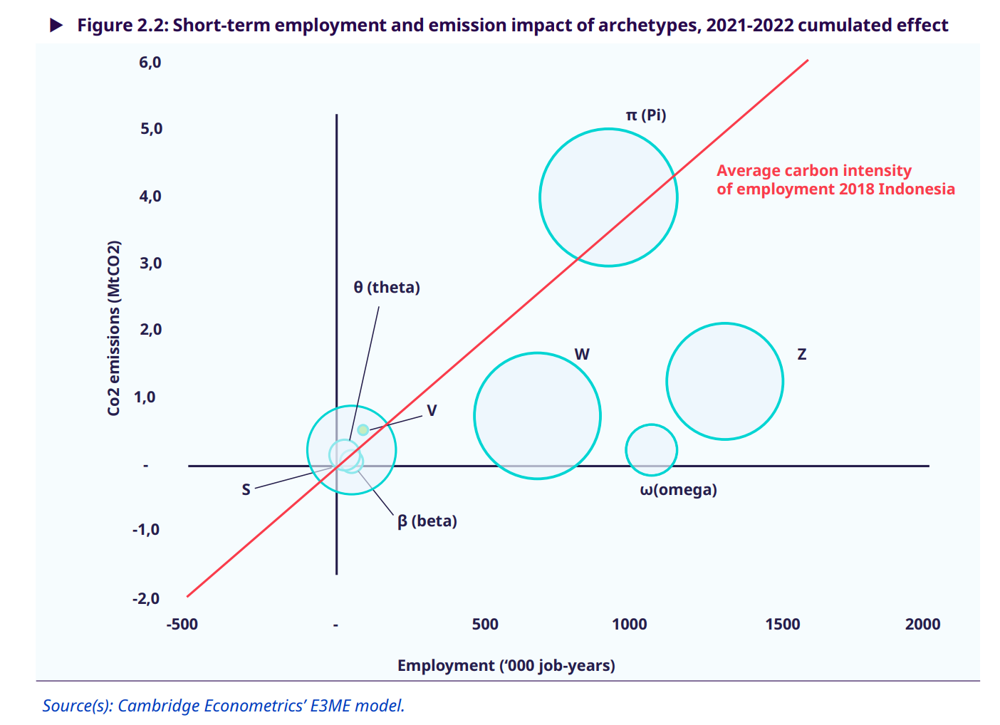

Green recovery
COVID-19 and the measures implemented to curb its spread have created a nearly unprecedent economic shock with unique characteristics. As coincidental demand and supply shocks have impacted the global economy governments got a blank cheque to help support people's livelihoods and to keep businesses afloat. Through multiple publications, often using modelling exercises, we have showed that there is a possibility for the recovery process to reach its socioeconomic aims while making progress towards sustainability as well. If we included modelling in the analysis we have mostly used the E3ME-FTT model.
This paper, commissioned by PAGE and UNEP, summarizes many aspects of our thinking at the time on the subject:
Papers / posts:
- Coronavirus: initial results from economic modelling
- Green recovery potential in South Africa also on ResearchGate
- Possible green recovery scenarios in Visegrad countries peer-reviewed
- Interactions between recovery and energy policy in South Africa peer-reviewed
- Green recovery measures enable the energy transition (model comparison) peer-reviewed
- Modelling the economic effects of COVID-19 and possible green recovery plans: a post-Keynesian approach (global scenarios) peer-reviewed
- Macroeconomic methodologies for modelling different recovery policy archetypes
- Employment impacts of COVID-19 crisis and recovery policies in Indonesia
- G20 communication, which included our analysis on shifting recovery spending towards developing countries
And then, if you would rather listen, here I speak about some of these results:
- IAMC Annual Conference 2021 - Economic impacts of COVID and preliminary recovery scenarios (YouTube)
Results about potential green recovery in Visegrad countries are interactive with Infogram, you can see it here.
And now some figures, because figures are cool and helpful:


We also show, for example how different green policies align with economic recovery objectives:

and that green policies can boost employment in sectors where COVID has caused the largest job losses

and analysed outcomes for individual countries: Hungary

as well as recovery policy archetype outcomes for individual countries: Indonesia
